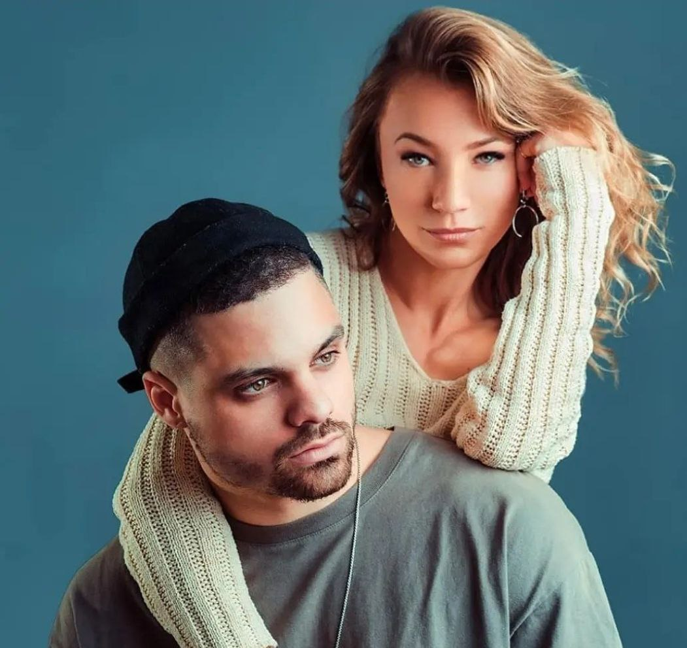

Hello everyone! I`m introduce you to the world of social dancing so that you
could fell in love with it as I did!
About dances
Kizomba
It is a dance and musical genre that originated in Angola in 1984. Kizomba is known for having a slow, insistent, somewhat harsh yet sensuous rhythm as the result of electronic percussion. It is danced accompanied by a partner, very smoothly, slowly and sensuously, and with neither tightness nor rigidity. There are frequent simultaneous hip rotations coordinated between dance pa.
Bachata
Bachata is a style of dance that originated in the Dominican Republic. It is danced widely all over the world but not identically. The basics to the dance are three-step with a Cuban hip motion, followed by a tap including a hip movement on the 4th beat. The knees should be slightly bent so the performer can sway the hips easier. The movement of the hips is very important because it is a part of the soul of the dance.
Salsa
Salsa is a mixture of Cuban dances, such as mambo, pachanga, and rumba, as well as American dances such as swing and tap. Salsa has many similarities with other partner dances, the styles and skills learned in salsa can be applied to another Latin dance like Bachata.
Dancers
Carolina.
Carolina is a dancer and teacher from Madrid (Spain). She began to fall in love with dancing in her school years. Back then she also did rhythmic gymnastics and ballet. Since 2011 she began to dance and learn social dances- Salsa, Bachata, Brazilian zouk and Kizomba. The latter became her great love among the dance styles. In 2012 she began her collaboration with Ronald Jara. With him she worked for a couple of years, visiting several international competitions during this time. Since 2014 she has been working with Enah Lebon @enah_lebon. This cooperation was marked by the creation and promotion of a new dance style in the world of kizomba - Urban kiz. Moreover, it is also worth mentioning Carolina as a teacher of Kizomba Lady Style. She occupies a worthy place among professionals. Another passion of Carolina is the Brazilian Zouk, which helps her to creat with Enah the Urbankizouk style. She also teaches it in tandem with Kadu @kadupiress. Bright, flexible and musical Carolina is always incredible and unique in both Kizomba and Brazilian Zouk.
Melvin and Gatica.
Melvin and Gatica are world famous dancers and bachata teachers. Their style and technique are rich in innovation and variety thanks to the mix of styles with which they complement Bachata. Social dancing began for Melvin with Salsa and Kizomba, and for Gatica with Salsa, Bachata and Tango. In addition, the artists have vast experience and are very familiar with other styles such as Jazz, Urban, Hip Hop, etc. This whole mix has become a good basis for their own style, “Bachata Influence”. They have traveled to many countries with their workshops and continue to share knowledge and passion for Bachata.

Gaby and Estefy.
Gaby and Estefy are Bachata Dominican and Salsa instructors from Madrid (Spain). Known for their energy, spirit and vibrant show numbers. Gaby is from the Dominican Republic. There he studied music and when he finished his studies, he moved to Spain. Estefy is a ballet dancer, she also danced Flamenco. Having met in social dancing, they combined their skills, experience, unique technique and formed a dance couple, starting to teach together in 2011 Salsa and since 2014 Bachata. With their seminars and workshops, they visited many countries as such: France, Italy, Great Britain, Lithuania, Latvia, Croatia, Ukraine, etc.